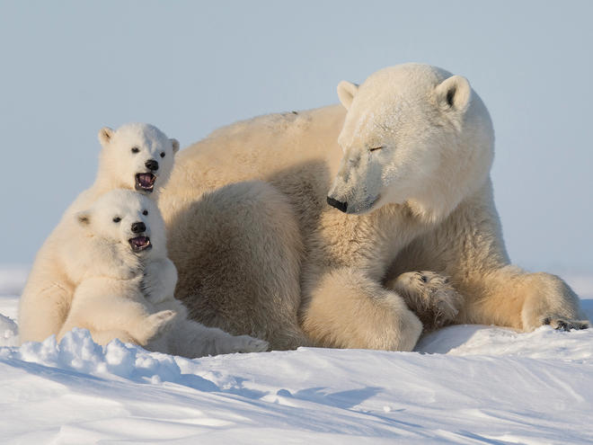
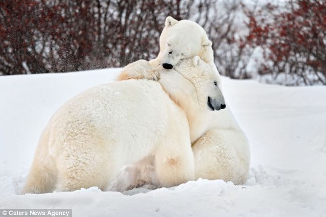
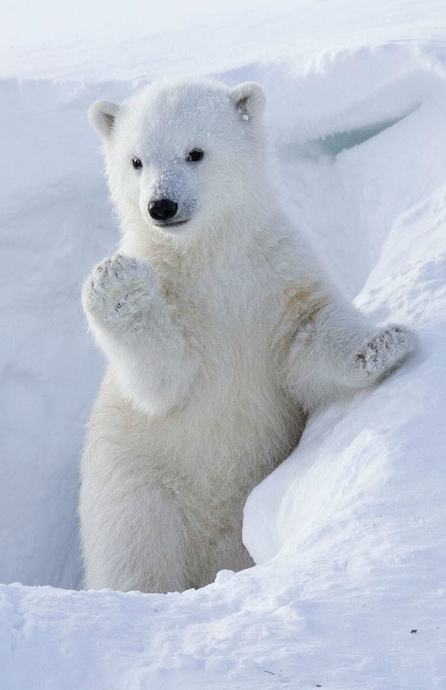
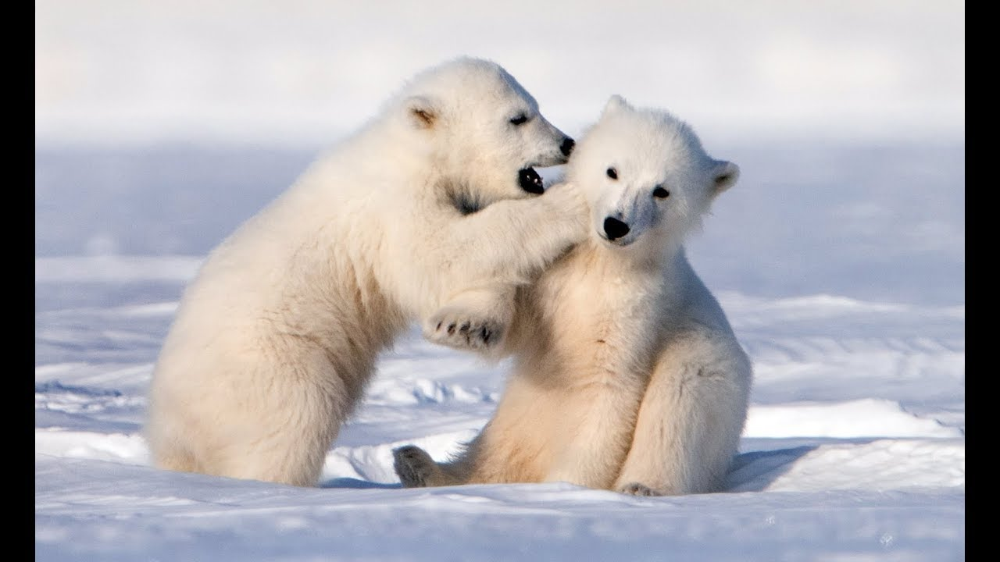
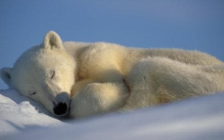
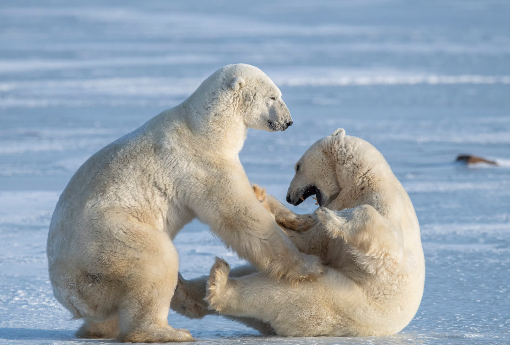

Polar Bears
The polar bear is a hypercarnivorous bear whose native range lies largely within the Arctic Circle, encompassing the Arctic Ocean, its surrounding seas and surrounding land masses. It is the largest extant bear species, as well as the largest extant land carnivore.
.jpg)
Habitat
Home for polar bears is on the sea ice, where they hunt seals at open leads. Polar bears are found in five nations across the Arctic: the U.S. (Alaska), Canada, Russia, Greenland, and Norway (Svalbard). The sea ice is vast and ever-changing. Because of this a polar bear's home range can be enormous—far greater than any other species of bear. The size of a polar bear's range depends on two main factors: the quality of the sea ice and the availability of their seal prey.
.jpg)
Adaptations
The polar bear's life cycle is closely tied to sea ice. Polar bears rely on the ice to travel, hunt seals, breed, and in some cases, den. Scientists believe polar bears are unlikely to survive if ice-free periods exceed their fasting ability (220 days), especially in areas that lack alternate marine mammal prey.Polar bears are strong swimmers and divers, a characteristic that allows them to swim from one ice floe to the next. But there’s a limit to how far they can swim. Long swims are especially dangerous to young cubs.

Gallery


.jpg)



.jpg)
.jpg)